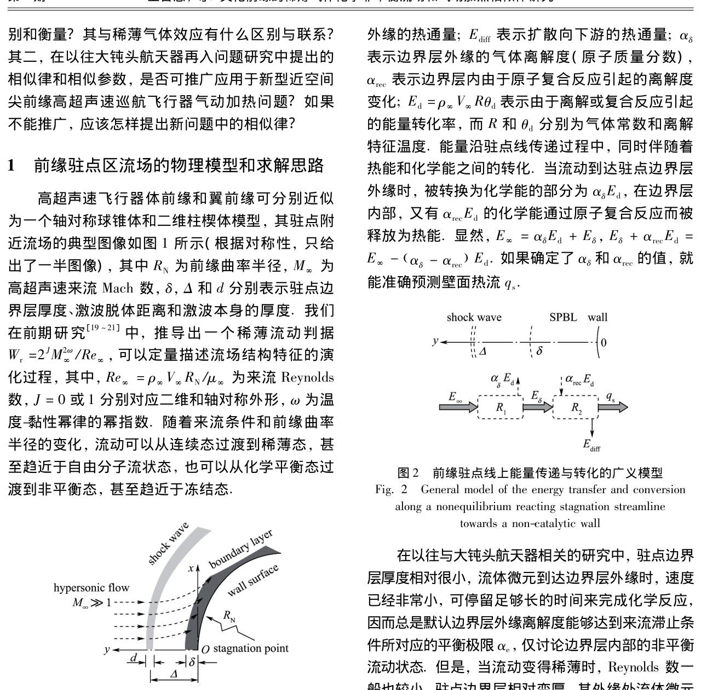
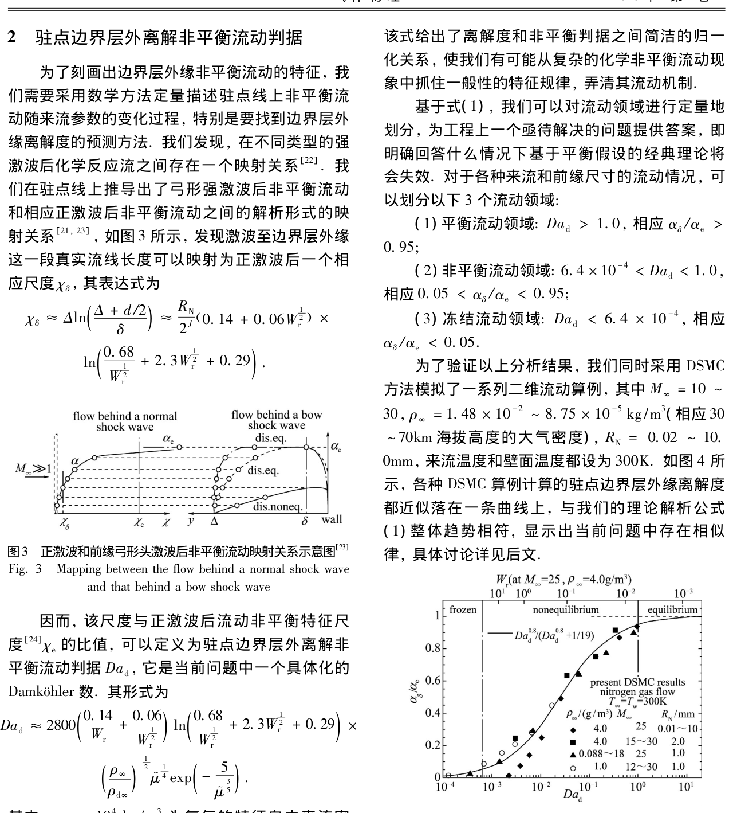
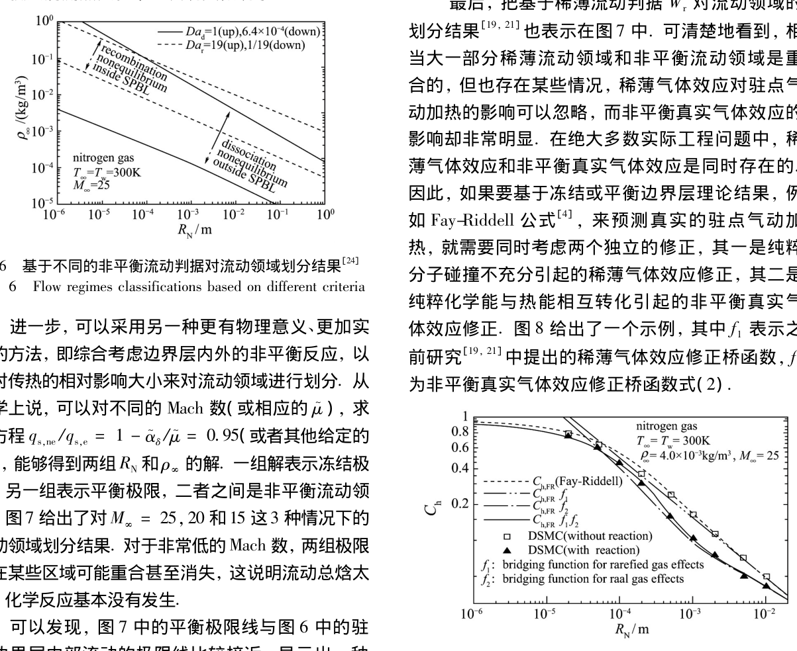

01中文摘要
本文以近空间尖前缘高超声速巡航飞行器为背景，综合回顾并深化作者此前关于微钝前缘驻点线化学非平衡流动和气动加热相似律的研究。稀薄条件下，驻点附近流动与传热出现不同于连续流动模型的新特征，超出经典气动热预测理论的适用范围。作者建立沿驻点线能量传递与转化的广义模型，分别推导边界层外离解非平衡判据和边界层内复合非平衡判据，并据此构造预测非平衡驻点气动加热的桥函数，讨论稀薄非平衡真实气体流动与气动加热的相似律。研究指出，尖前缘飞行器的气动热环境不同于传统大钝头再入问题，传统天地换算相似准则将失效。
原始摘要（英文/原文）
以近空间尖前缘高超声速巡航飞行器的研制为背景,作者在前一阶段采用模型理论分析方法,陆续研究了沿微钝前缘驻点线的化学非平衡流动和气动加热相似律,文章是上述研究的综合回顾和深化讨论.稀薄条件下,驻点附近流动和传热出现一系列与连续流动模型不同的新特征,超出了经典气动热预测理论的适用范围.作者建立了一个沿驻点线能量传递和转化的广义模型,并分别推导了具有实际物理意义的边界层外离解非平衡流动判据和边界层内复合非平衡流动判据.基于这些判据构建了预测非平衡流动驻点气动加热的桥函数,并讨论了稀薄非平衡真实气体流动和气动加热的相似律,发现新型近空间尖前缘飞行器遭遇的气动热环境不同于传统大钝头航天器再入问题,传统的天地换算相似准则将会失效.这些理论分析结果可为稀薄非平衡化学反应流及气动加热的实验和计算提供一个标模检验的手段.
02阅读说明
bundle 共 459 行，已全部读到 EOF。原文为中文综述/理论文章（王智慧、鲍麟、童秉纲，气体物理 2016, 1(1):5–12，DOI 10.19527/j.cnki.2096-1642.2016.01.004，8 页）。bundle 文本层为双栏交错排版，公式多乱码；另核对原 PDF 第 3–5 页（印刷页 7–9）公式区，均在允许的 6 页以内。图件全部按“已抓图清单”原样使用。 文章类型：期刊
03一句话核心与三句话摘要
稀薄化学非平衡驻点流动由离解与复合双判据控制，传统天地换算失效
- 建立沿驻点线的能量传递与转化广义模型，并定义边界层外离解判据 Da_d 与边界层内复合判据 Da_r。 原文明确
- 由式(1)和桥函数式(2)可统一预测连续/稀薄、平衡/非平衡/冻结条件下的驻点热流。 AI概括
- 尖前缘稀薄非平衡气动热需四参数相似，传统 ρ∞RN 天地换算不再成立。 原文明确
04核心内容清单
| 要点 | 类型 | 重要性 | 原文依据 | 属性 |
|---|---|---|---|---|
| 建立边界层外离解判据 Da_d 与边界层内复合判据 Da_r，二者物理意义不同且不能互相替代。 | 判据 | A | p.8–9，第2–3节，式(1) | 原文明确 |
| αδ/αe≈Da_d^0.8/(Da_d^0.8+1/19)，并据此划分平衡（Da_d>1.0）、非平衡（6.4×10⁻⁴<Da_d<1.0）、冻结（Da_d<6.4×10⁻⁴）三个领域。 | 定量关系 | A | p.8，式(1) | 原文明确 |
| DSMC 计算的边界层外缘离解度在不同 M∞、ρ∞、RN 下落到同一条归一化曲线，支持该问题的相似性。 | 验证 | A | p.8，图4 | 原文明确 |
| 桥函数 q_s,ne/q_s,e=1−αδ/[μ̃(1+Da_r)] 统一描述连续/稀薄与平衡/非平衡/冻结，并在有限非平衡度出现极小。 | 模型 | B | p.9，式(2)，图5 | 原文明确 |
| 边界层内外的冻结次序不唯一：一般内部先冻结，但低密度大钝头可内部先偏离平衡，高密度小前缘可外部先偏离。 | 机制 | B | p.9–10，图6 | 原文明确 |
| 新相似律要求四参数：T∞/θd、ρ∞/ρd∞、μ̃、Wr（或 Da_d/Da_r）；有量纲形式为 T∞、V∞、ρ∞、RN。 | 相似律 | A | p.11，第5节 | 原文明确 |
| Da_r 极限对应 ρ∞²RN 相似，Da_d 极限对应 ρ∞RN 相似；传统天地换算只模拟边界层外非平衡。 | 相似律 | A | p.10，第4节 | 原文明确 |
| 驻点热流预测需同时施加稀薄气体效应修正 f1 与非平衡真实气体效应修正 f2。 | 推论 | B | p.10，图8 | 原文明确 |
| μ̃ 和 ρ∞/ρd∞ 决定离解-复合反应的平衡极限，Wr（或 Da_d/Da_r）决定实际非平衡状态与传热特征。 | 参数意义 | C | p.11，第5节 | 原文明确 |
| 模型限于氮气、完全非催化冷壁、层流微钝前缘；催化壁、表面粗糙度与分子退激化等留待后续。 | 局限 | C | p.10–11，第4–5节 | 原文明确 |
05引言：研究问题与领域缺口
【原文明确】近空间尖前缘高超声速巡航器处于 Kn=O(1)、Da=O(1) 的稀薄过渡非平衡流动，Fay–Riddell 等连续流/化学平衡理论失效（p.5–6 引言）。【原文明确】作者提出两个问题：如何定量判别非平衡真实气体效应及其与稀薄气体效应的区别与联系；针对大钝头再入的相似律能否推广到尖前缘（p.7 引言）。【AI概括】因此目标是建立有确定物理意义的判据、桥函数与相似律，为实验/DSMC 提供标模检验。
06流动条件与几何构型
| 项目 | 数值/描述 | 依据 | 备注 |
|---|---|---|---|
| 外形与参考长度 | 二维柱楔或轴对称球锥微钝前缘；前缘曲率半径 RN=0.02–10.0 mm | p.3 第1节；p.4 第2节 DSMC 算例 | J=0 为二维、J=1 为轴对称，见 p.3 |
| 来流 Mach 数 | M∞=10–30 | p.4 第2节 | DSMC 验证范围 |
| 来流密度 | ρ∞=1.48×10⁻²–8.75×10⁻⁵ kg/m³ | p.4 第2节 | 对应约 30–70 km 海拔 |
| 来流与壁面温度 | T∞=Tw=300 K | p.4 第2节 | |
| 壁面催化条件 | 完全非催化冷壁 | p.2 引言、p.3 | 催化壁仅作定性讨论（p.9–10） |
| 气体模型 | 氮气，理想离解气体模型，仅考虑离解-复合反应 | p.2 引言 | |
| 稀薄/非平衡程度 | Kn=O(1)、Da=O(1) 的稀薄过渡非平衡流动 | p.2 引言 | |
| 流动状态 | 定常、层流；模型理论分析与 DSMC 对比 | p.2、p.4 | |
| 相似参数 | T∞/θd、ρ∞/ρd∞、μ̃、Wr（具体流动可换为 Da_d 或 Da_r） | p.11 第5节 | |
| 平衡/冻结极限 | Da_d>1.0 视为平衡；Da_d<6.4×10⁻⁴ 视为冻结 | p.8 第2节 |
07核心现象与关键参数
| 参数 | 定义 | 数值 | 关系/说明 | 依据 |
|---|---|---|---|---|
| Wr | 稀薄流动判据 | Wr=2^J M∞²ω∞/Re∞ | Re∞=ρ∞V∞RN/μ∞；J=0 二维、J=1 轴对称；ω 为温度-黏性幂律指数 | p.3 第1节 |
| Da_d | 驻点边界层外离解非平衡判据（具体化的 Damköhler 数） | Da_d≈2800(0.14/Wr+0.06/Wr²)ln(0.68/Wr+2.3Wr^{1/2}+0.29)(ρ∞/ρd∞)^{1/2}(1/μ̃)exp(−5/μ̃²) | 定义为 χδ/χe，即弓形激波后等效非平衡尺度与正激波非平衡特征尺度之比 | p.8 第2节（未编号式） |
| Da_r | 驻点边界层内复合非平衡判据 | Da_r≈7.7×10⁴(αδ/Wr)(ρ∞/(μ̃ρd∞)) | 由边界层内复合反应与扩散时间尺度之比定义 | p.9 第3节 |
| αδ/αe | 边界层外缘离解度与平衡离解度之比 | αδ/αe≈Da_d^0.8/(Da_d^0.8+1/19) | 式(1)；Da_d→0 时趋于 0，Da_d≫1 时趋于 1 | p.8 式(1) |
| φ | 边界层内复合导致的离解度保留比例 | φ=1−αrec/αδ=1/(1+Da_r) | p.9 第3节 | |
| q_s,ne/q_s,e | 非平衡驻点热流与平衡边界层热流之比（桥函数） | 1−αδφ/μ̃=1−αδ/[μ̃(1+Da_r)]=1−ᾱδ/μ̃ | 式(2)；Da_r→∞ 与 αδ→0 两端均趋于 0 | p.9 式(2) |
| μ̃ | 无量纲来流动能 | μ̃=V∞²/(2Rθd) | 表征典型气体分子可被激发的极限 | p.8 第2节 |
| ρd∞ | 氮气特征自由来流密度 | 10⁴ kg/m³ | p.8 第2节 | |
| θd | 离解特征温度 | 文中未给出氮气 θd 的具体数值 | p.3 第1节 | |
| RN | 前缘曲率半径（参考长度） | 0.02–10.0 mm | Da_d∝ρ∞RN、Da_r∝ρ∞²RN（p.10） | p.4 第2节；p.10 第4节 |
| 领域阈值 | 按 Da_d 与 αδ/αe 划分流动领域 | 平衡：Da_d>1.0、αδ/αe>0.95；非平衡：6.4×10⁻⁴<Da_d<1.0、0.05<αδ/αe<0.95；冻结：Da_d<6.4×10⁻⁴、αδ/αe<0.05 | p.8 第2节 |
08方法与数据
【原文明确】建立沿驻点线的能量传递/转化广义模型（p.7，图2）；利用弓形激波后与正激波后非平衡流动的解析映射定义等效尺度 χδ 和判据 Da_d（p.8，图3）；由边界层内复合与扩散时间尺度定义 Da_r（p.9）；采用氮气理想离解气体、完全非催化冷壁，并用 DSMC 在 M∞=10–30、ρ∞=1.48×10⁻²–8.75×10⁻⁵ kg/m³、RN=0.02–10 mm、T∞=Tw=300 K 条件下验证（p.4）。
| 项目 | 内容 | 依据 | 备注 |
|---|---|---|---|
| 驻点线能量传递/转化模型 | 把总焓通量分解为边界层外缘热通量、扩散热通量与离解/复合化学能，建立 E∞=αδEd+Eδ、Eδ+αrecEd=E∞−(αδ−αrec)Ed | p.7 第1节，图2 | |
| 弓形激波—正激波映射 | 将激波至边界层外缘的真实流线长度映射为正激波后等效尺度 χδ，并与正激波非平衡尺度 χe 相除得到 Da_d | p.8 第2节，图3 | |
| 边界层内复合判据 | 由复合反应与扩散的时间尺度差异定义 Da_r，并用 φ=1/(1+Da_r) 表示复合后的离解度 | p.9 第3节 | |
| 桥函数构建 | 把边界层内复合效应等效为对边界层外缘离解度的削减，构造仅依赖无量纲来流参数的 q_s,ne/q_s,e 桥函数 | p.9 第3节，式(2) | |
| DSMC 验证 | 二维流动算例，M∞=10–30、ρ∞=1.48×10⁻²–8.75×10⁻⁵ kg/m³、RN=0.02–10 mm、T∞=Tw=300 K | p.4 第2节，图4 | |
| 相似分析 | 将判据改写为无量纲参数组合，比较平衡/冻结极限线与稀薄领域线，讨论天地换算与四参数相似 | p.9–11 第4–5节，图6–图8 |
09核心推导与公式
把弓形激波后真实流线映射为正激波后的等效非平衡尺度 χδ，以 χδ 与正激波非平衡特征尺度 χe 之比定义边界层外离解判据 Da_d；再由边界层内复合与扩散时间尺度之比定义 Da_r；将复合效应折算为对边界层外缘离解度的削减，合成驻点热流桥函数。
关键假设
- 二维/轴对称微钝前缘，考察驻点线附近流动
- 氮气理想离解气体模型，仅考虑离解-复合反应
- 边界层外分子二体碰撞占优、三体碰撞可忽略；边界层内复合受三体碰撞控制
- 完全非催化冷壁，T∞=Tw=300 K
- 边界层外缘为离解非平衡、边界层内为复合非平衡，平衡与冻结是两种极限
- 激波足够薄，激波后非平衡流动可用正激波特征尺度映射
- 定常、层流；稀薄效应用 Wr 表征
推导过程
把来流总焓通量 E∞ 分为到达边界层外缘的热通量 Eδ、扩散热通量 Ediff 与离解/复合化学能；边界层外离解吸收 αδEd，边界层内复合释放 αrecEd。
将激波至边界层外缘的真实流线长度映射为正激波后相应尺度 χδ，并用 δ、Δ、d、Wr、RN 表示。
取 χδ 与正激波后非平衡特征尺度 χe 之比，得到具体化的 Damköhler 数 Da_d；式中 ρd∞ 为氮气特征自由来流密度，μ̃ 为无量纲来流动能。
利用正激波非平衡流动的结果，把边界层外缘离解度写成 Da_d 的单值函数，并据此划分三个流动领域。
比较边界层内复合反应与扩散的时间尺度，定义 Da_r；复合后仍保留的离解度比例为 φ。
把复合效应折算为对边界层外缘离解度的削减，以冻结边界层热流为基准，得到非平衡热流与平衡热流之比。
把 Da_d、Da_r、Wr 组合成四参数相似；在平衡或冻结极限下减少一个独立参数，并用有量纲量表示为 T∞、V∞、ρ∞、RN。
适用边界：Da_d 中的系数 2800 与指数项 exp(−5/μ̃²) 的来源未在本文展开；χδ 的 RN 指数在文本层有歧义（按 PDF 第8页记为 1/2）；模型只针对氮气、完全非催化冷壁、层流微钝前缘，DSMC 验证限于 p.4 所列参数范围；未定量处理催化壁、表面粗糙度、湍流转捩与多组分空气。
10结果：主要发现与关键证据
【原文明确】给出 αδ/αe≈Da_d^0.8/(Da_d^0.8+1/19)（式(1)，p.8）及平衡/非平衡/冻结三领域阈值；DSMC 的 αδ 结果在图4 的归一化曲线上塌缩（p.8）。【原文明确】给出 φ=1/(1+Da_r) 与驻点热流桥函数式(2)（p.9），并给出四参数相似律（p.11）。【原文明确】指出 Da_r 对应 ρ∞²RN 相似、Da_d 对应 ρ∞RN 相似（p.10）。
| 发现 | 证据 | 证据类型 | 强度 | 位置 | 属性 |
|---|---|---|---|---|---|
| 边界层外离解非平衡与边界层内复合非平衡必须用两个独立判据描述。 | Da_d 由 χδ/χe 定义，Da_r 由复合/扩散时间尺度定义；式(1)只含 Da_d，桥函数式(2)同时含 Da_d 与 Da_r。 | 判据体系 | 强 | p.8–9，第2–3节，式(1)(2) | 原文明确 |
| 归一化离解度关系把不同来流条件和前缘尺寸的 DSMC 结果 collapse 到一条曲线。 | 图4；算例范围 M∞=10–30、ρ∞=1.48×10⁻²–8.75×10⁻⁵ kg/m³、RN=0.02–10 mm、T∞=Tw=300 K。 | 验证 | 强 | p.8，图4（p.4） | 原文明确 |
| 桥函数预测非平衡驻点热流相对平衡值的削减，并在有限非平衡度出现极小值。 | 式(2)；图5 给出不同 Mach 数下桥函数极值出现位置。 | 模型预测 | 中 | p.9，式(2)，图5（p.5） | 原文明确 |
| 边界层内外的冻结次序不唯一，取决于低密度/大尺寸还是高密度/小尺寸。 | 图6 中基于 Da_d 与 Da_r 的非平衡区不完全重合；p.9–10 明确讨论两种相反情形。 | 机制 | 强 | p.9–10，图6（p.6） | 原文明确 |
| 传统 ρ∞RN 天地换算不能复现尖前缘非平衡驻点传热。 | 图7 的平衡极限线近似 ρ∞²RN 相似、冻结极限线近似 ρ∞RN 相似；ρ∞RN 相似只对应边界层外非平衡。 | 相似律 | 强 | p.10–11，图7（p.6） | 原文明确 |
| 实际驻点热流需同时施加稀薄气体效应与非平衡真实气体效应两种修正。 | 图8 给出 f1（稀薄修正）与 f2（非平衡真实气体修正）共同作用下的驻点热流趋势。 | 推论 | 中 | p.10，图8（p.6） | 原文明确 |
11机制解释与论证链
强激波把来流动能转化为热能，离解反应又把部分热能转为化学能；流体微元从激波到边界层外缘的停留时间与离解时间之比决定 αδ，故用 Da_d 表征边界层外离解非平衡。进入冷壁边界层后复合反应占优，但复合时间与停留时间之比有限，故用 Da_r 表征边界层内复合非平衡；复合释放的热量可等效为对边界层外缘离解度的削减，从而把非平衡边界层传热写成冻结边界层热流的修正。稀薄化使边界层增厚、外缘法向速度有限，微元来不及达到平衡就进入边界层，所以边界层内外可能遵循不同的相似律。
12讨论：结论、贡献与局限
【原文明确】随稀薄化边界层内部通常先于外部冻结，但低密度大尺寸前缘可内部先偏离平衡，高密度小尺寸前缘可外部先偏离（p.9–10，图6）。【原文明确】传统 ρ∞RN 天地换算只保证边界层外流动相似，不能复现内部非平衡传热，故失效（p.10–11）。【AI推断】实际预测需同时叠加稀薄修正 f1 与非平衡真实气体修正 f2（图8）。
作者结论
【原文明确】驻点边界层外为离解非平衡、边界层内为复合非平衡，是新型近空间尖前缘巡航器头部流动的一般情形；内外流动遵循不同相似律，不能把大钝头再入的经验公式直接推广（p.11 第5节）。【原文明确】新相似律要求四参数（T∞/θd、ρ∞/ρd∞、μ̃、Wr，或换成 Da_d/Da_r），有量纲形式为 T∞、V∞、ρ∞、RN；只有平衡或冻结极限才减少一个参数（p.11）。【原文明确】传统天地换算准则失效，涉及非平衡气动加热的实验与数值模拟必须采用全尺寸模型并完全复现真实来流条件（p.11）。
主要贡献
- 提出沿驻点线能量传递/转化的广义模型，把边界层外离解与边界层内复合纳入统一框架。
- 定义具有定量物理意义的 Da_d 与 Da_r 两个判据，并给出可解析计算的离解度关系式(1)。
- 构建驻点热流桥函数式(2)，覆盖连续至稀薄、平衡/非平衡/冻结。
- 给出四参数相似律，指出传统 ρ∞RN 天地换算在尖前缘非平衡气动热问题中失效。
- 用 DSMC 在宽参数范围内验证归一化离解度曲线，为实验/计算提供标模检验。
局限与未解决问题
仅氮气理想离解气体、完全非催化冷壁、层流、二维/轴对称微钝前缘；DSMC 验证限于 M∞=10–30、ρ∞=1.48×10⁻²–8.75×10⁻⁵ kg/m³、RN=0.02–10 mm、T∞=Tw=300 K（p.4）。Da_d 的系数 2800 与 exp(−5/μ̃²) 未在文中推导，且指数项排版很小、存在轻微辨识不确定性；χδ 中 RN 的指数在文本层有歧义，经 PDF 第8页核对采用 1/2。催化壁、有限催化、表面粗糙度、分子退激化、湍流转捩均未定量处理（p.10–11）。
13对高速流动与工程的意义
为稀薄非平衡化学反应流与气动热提供了一套可解析计算、可用于快速估算和标模检验的判据、桥函数与相似律；同时明确指出新型尖前缘飞行器的热环境不同于传统大钝头再入，天地换算必须全尺寸、真实来流复现（p.11）。
14核心图件




15可引用原文素材
| 原文短句 | 可支持的观点 | 位置 | 使用建议 |
|---|---|---|---|
| “传统的天地换算相似准则将会失效” | 全文核心结论：尖前缘非平衡气动热不能靠传统天地换算外推 | p.1 摘要 | 结论 |
| “边界层内部的流动总是先于外部流动趋向于冻结” | 一般情形下内部复合非平衡先出现 | p.9 第4节 | 机制 |
| “驻点边界层传热主要取决于边界层外缘的流动条件” | 桥函数以边界层外缘状态为基准的合理性 | p.9 第3节 | 模型依据 |
| “应该区分低密度引起的稀薄效应和小特征尺度引起的稀薄效应” | 内外冻结次序可能相反，不能只看 Kn 或 ρ∞RN | p.10 第4节 | 机制 |
| “必须采用全尺寸模型和完全复现真实来流条件” | 四参数相似律对实验/计算的要求 | p.11 第5节 | 结论 |
| “不能把针对后者提出的预测方法简单推广用于前者” | 大钝头再入经验公式不适用于尖前缘 | p.11 第5节 | 结论 |
16最终核验
| 核验项 | 结论 |
|---|---|
| 仅基于全文 | 仅使用 bundle 的 metadata、图注、459 行带页码文本，以及原 PDF 第 3–5 页（印刷页 7–9）公式区核对；未引用外部知识或外部文献结论。 |
| A 级要点有依据 | A 级要点均有页码/式号/图号支撑：Da_d、Da_r 与式(1)见 p.8；桥函数式(2)见 p.9；四参数相似律见 p.11；DSMC 对比见图4（p.4）。 |
| 属性标注 | three_sentence、core_points、findings 均逐条标注 原文明确/AI概括/AI推断；IMRaD 段落内亦用【】标注。 |
| 覆盖范围 | bundle 459 行已读到 EOF；8 幅抓图清单全部登记，选用 4 幅；原 PDF 仅读第 3–5 页，未超过 6 页限制。 |
| 无编造 | 未补写原文没有的页码、图号、公式或数据；θd 数值等未给出者写“文中未给出”；Da_d 指数项、χδ 的 RN 指数均注明核对来源与不确定性。 |
需回原文确认
- Da_d 表达式中的系数 2800 与 exp(−5/μ̃²) 如何由正激波非平衡理论推导，本文未展开。
- 有限催化壁、部分催化壁会如何定量改写 φ 与桥函数式(2)？
- 四参数相似律对多组分空气（含 O、N、NO 等）是否仍成立？
- θd 的具体取值及振动激发对 αδ、αrec 的影响未讨论，是否会改变领域阈值？
- 桥函数极值的解析位置与图5 的定量一致性如何？
- 在更低密度或更高 Mach 数下，DSMC 归一化曲线是否仍塌缩？
17关联文献
依据标签、板块、构型与作者脉络自动关联，可据此追踪同一问题的前序与后续工作。
18引用格式
选择期刊风格后复制；出处保留原刊名。BibTeX 可直接用于 LaTeX。
引用格式
王智慧, 鲍麟 & 童秉纲 2016 尖化前缘的稀薄气体化学非平衡流动和气动加热相似律研究. 气体物理 1 (1), 5–12. https://doi.org/10.19527/j.cnki.2096-1642.2016.01.004
PDF上传 PDF 并更新本页
本页缺少全文、摘要或图件时，可在浏览器本地补入 PDF。解析完全在本机完成，不上传网络；完成后会更新本页的 PDF 打开链接、原摘要、IMRaD 机器抽取、关键句与含图页面。复杂的公式语义与中文深度解读仍以原文和既有精读记录为准。